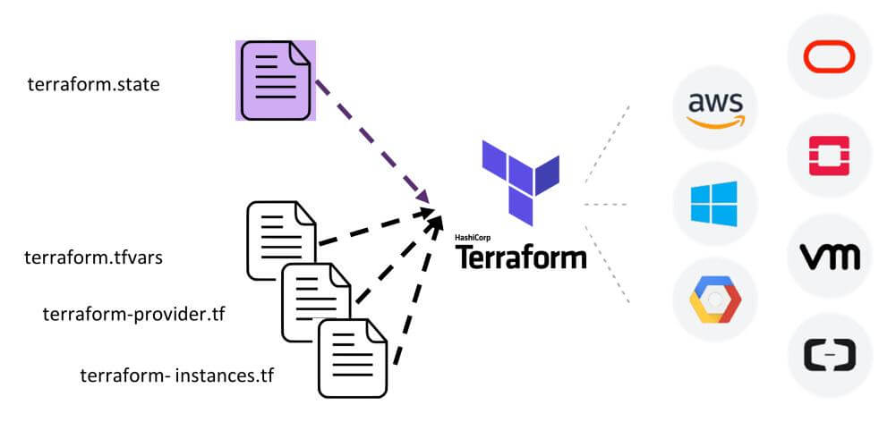
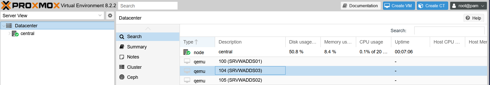

Description du projet
Ce projet a été conçu pour faciliter le déploiment de machines virtuelles en vue de construire un environnement réseau. Cet environnement réseau devait servir à réaliser divers test pour les besoins de mon entreprise.
Terraform permettra de déployer automatiquement des machines virtuelles sur un environnement Proxmox.
Qu’est-ce que Terraform ?
Terraform est un outil d’Infrastructure as Code (IaC) développé par HashiCorp. Il permet d’automatiser le déploiement et la gestion d’infrastructures cloud ou locales à l’aide de fichiers de configuration.
Grâce à Terraform, l’infrastructure peut être décrite sous forme de code, ce qui la rend réplicable, versionnable et maintenable. Il est particulièrement utile dans les contextes DevOps pour assurer des déploiements cohérents et rapides.

La Partie Proxmox
Dans le cadre de ce projet, j'avais besoin d'une plateforme de virtualisation pour gérer les machines virtuelles machines virtuelles servant à construire un environnement de test en réseau. J'ai choisi Proxmox pour sa simplicité et ses nombreuses fonctionalités .Cela a permis un gain de temps considérable et une grande fiabilité dans la création et la suppression de l’infrastructure.

Documentation complète
Accédez à la documentation du projet V-Check : code, schémas, explications détaillées.
Voir la documentation